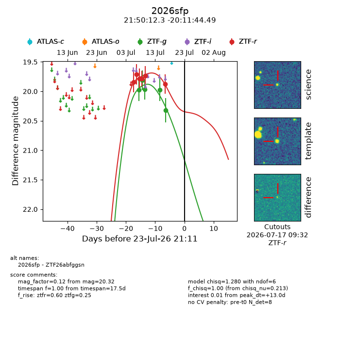
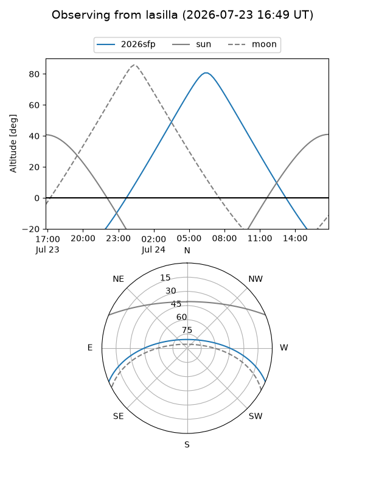
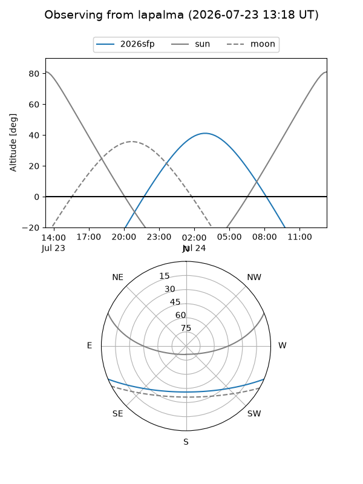
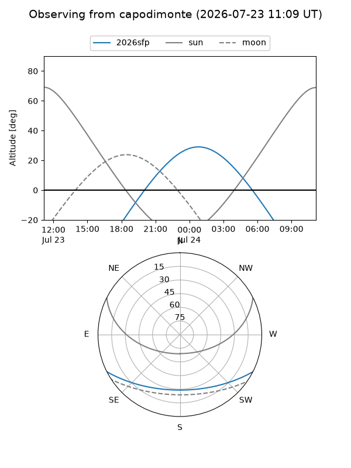
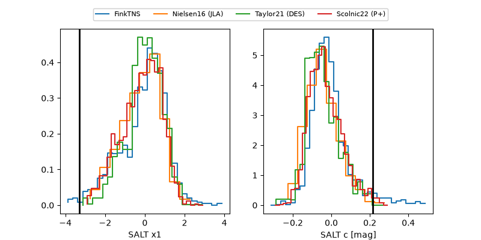

2026sfp
Target 2026sfp at 2026-07-23 21:14
Aliases and brokers:
FINK-ZTF: ztf.fink-portal.org/ZTF26abfggsn
Lasair-ZTF: lasair-ztf.lsst.ac.uk/objects/ZTF26abfggsn
ALeRCE-ZTF: alerce.online/object/ZTF26abfggsn
YSE-PZ: ziggy.ucolick.org/yse/transient_detail/2026sfp
TNS name: wis-tns.org/object/2026sfp
Direct TNS query: direct search
alt names
ZTF26abfggsn (ztf,fink_ztf)
2026sfp (tns,yse)
Coordinates:
equatorial (ra, dec) = 327.5514,-20.19569
equatorial (HMS+DMS) = 21:50:12.33,-20:11:44.49
galactic (l, b) = (32.3932,-48.14702)
Flags:
TNS type: nan
peak dt: +13.0
Photometry:
last ztfg=20.32, ztfr=19.88
5 ztfg, 6 ztfr detections
Lightcurve

Visibility



Additional plots
